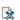
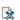

|
|
Desde aquí podemos configurar la numeración de los registros. Existen dos tipos de numeración, Central y por Oficina,
el primero es un contador general y el segundo por cada una de las oficinas. Estos contadores son independientes cada
año y son compartidos por todos los libros del mismo tipo (entrada o salida).

Una vez editada la infomación
pulse el botón  Guardar para almacenar los contadores y volver al listado de
oficinas o el botón Cancelar para ir al listado de libros sin modificarla.
Los datos a rellenar son los siguientes: Guardar para almacenar los contadores y volver al listado de
oficinas o el botón Cancelar para ir al listado de libros sin modificarla.
Los datos a rellenar son los siguientes:
-
Año: Año al que se refieren los datos de la numeración (Cada año se comienza con unos contadores nuevos).
-
Central: Contador utilizado por los libros que usan la numeración central (Vea Alta libro o Edición libro).
-
Por Oficina: Contadores utilizados por los libros que usan la numeración por oficina (Vea Alta libro o Edición libro).
|
|
|